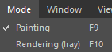

| Action | Description |
|---|---|
| Painting | This mode allows to work over the 3D model and to manipulate the layer stack. |
| Rendering | This mode allows to switch to the non-realtime renderer with the current project. For more information see the dedicated page: Iray Renderer. |